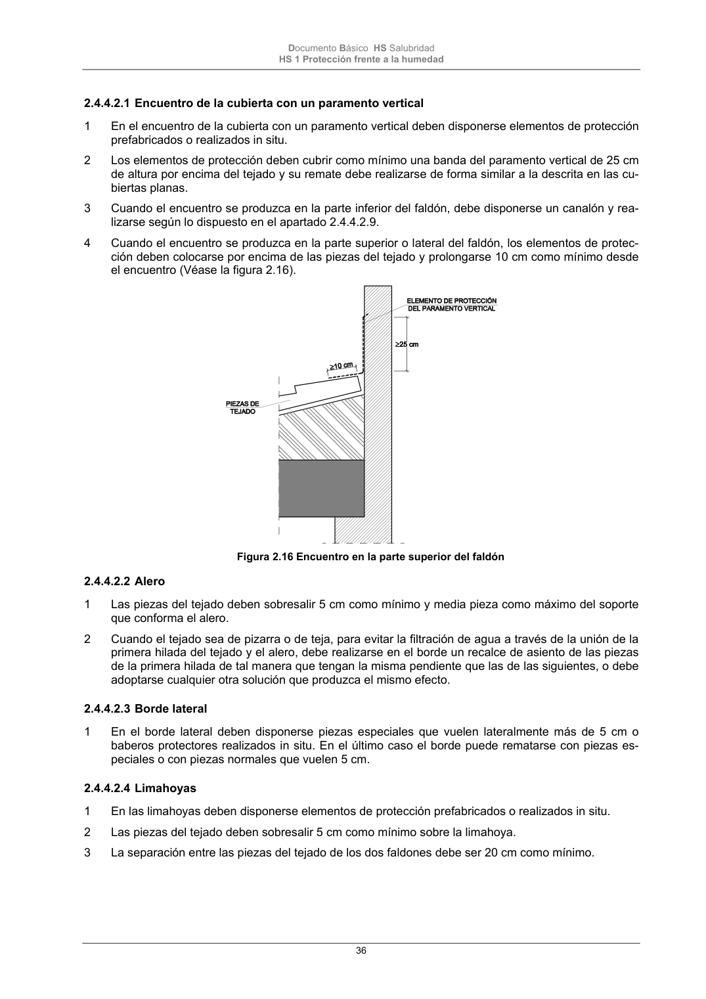

DB-HS · Página 36 · versión 2022-06-14
SHA256: 68df3caacc95f71aee2ec1ba7b2c65ae66155c21e3a8785521b8fdd4fd640d3b · página física 36 de 184 · métodos de encabezado
solo si están cotejados.
Formatos: Markdown · JSON de bloques · PDF p. 36 · imagen PNG
Documento Básico HS Salubridad HS 1 Protección frente a la humedad 36 2.4.4.2.1 Encuentro de la cubierta con un paramento vertical 1 En el encuentro de la cubierta con un paramento vertical deben disponerse elementos de protección prefabricados o realizados in situ. 2 Los elementos de protección deben cubrir como mínimo una banda del paramento vertical de 25 cm de altura por encima del tejado y su remate debe realizarse de forma similar a la descrita en las cu- biertas planas. 3 Cuando el encuentro se produzca en la parte inferior del faldón, debe disponerse un canalón y rea- lizarse según lo dispuesto en el apartado 2.4.4.2.9. 4 Cuando el encuentro se produzca en la parte superior o lateral del faldón, los elementos de protec- ción deben colocarse por encima de las piezas del tejado y prolongarse 10 cm como mínimo desde el encuentro (Véase la figura 2.16). Figura 2.16 Encuentro en la parte superior del faldón 2.4.4.2.2 Alero 1 Las piezas del tejado deben sobresalir 5 cm como mínimo y media pieza como máximo del soporte que conforma el alero. 2 Cuando el tejado sea de pizarra o de teja, para evitar la filtración de agua a través de la unión de la primera hilada del tejado y el alero, debe realizarse en el borde un recalce de asiento de las piezas de la primera hilada de tal manera que tengan la misma pendiente que las de las siguientes, o debe adoptarse cualquier otra solución que produzca el mismo efecto. 2.4.4.2.3 Borde lateral 1 En el borde lateral deben disponerse piezas especiales que vuelen lateralmente más de 5 cm o baberos protectores realizados in situ. En el último caso el borde puede rematarse con piezas es- peciales o con piezas normales que vuelen 5 cm. 2.4.4.2.4 Limahoyas 1 En las limahoyas deben disponerse elementos de protección prefabricados o realizados in situ. 2 Las piezas del tejado deben sobresalir 5 cm como mínimo sobre la limahoya. 3 La separación entre las piezas del tejado de los dos faldones debe ser 20 cm como mínimo.
